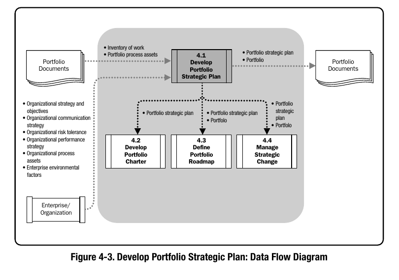
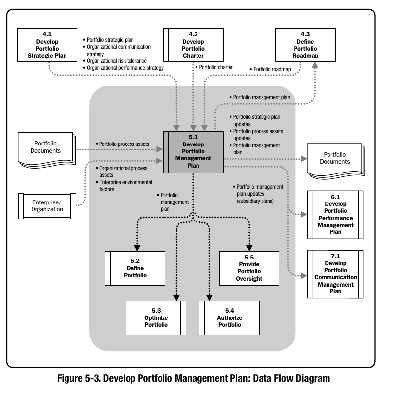
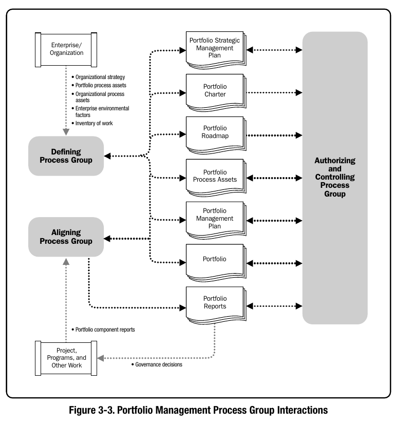
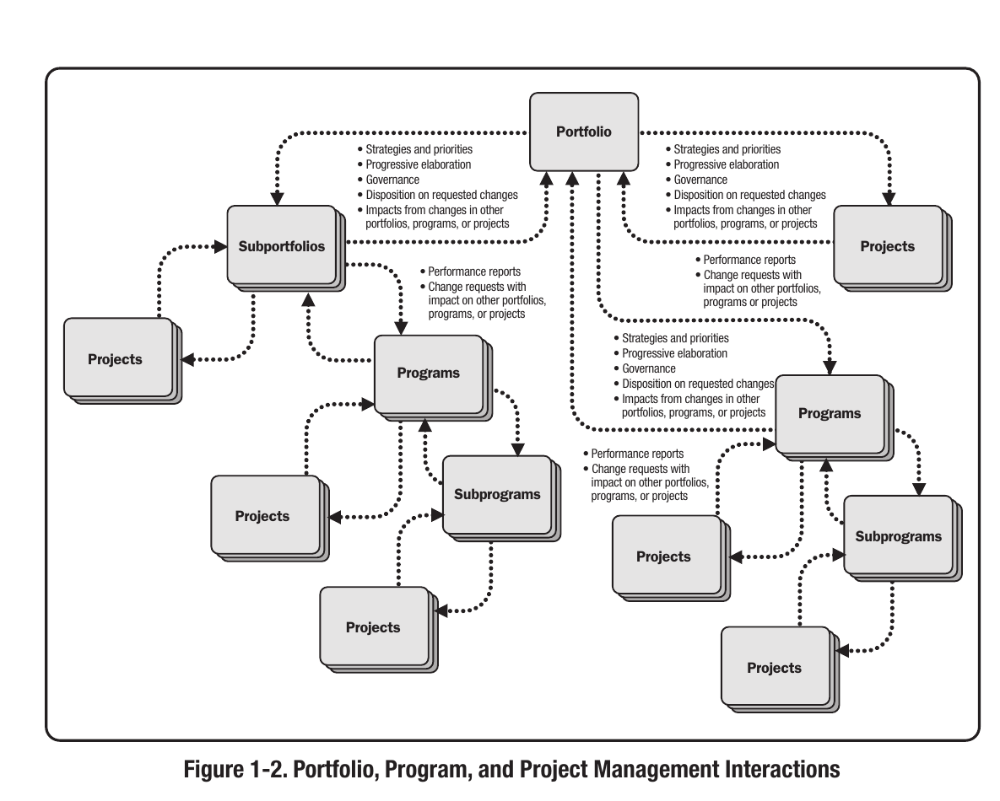
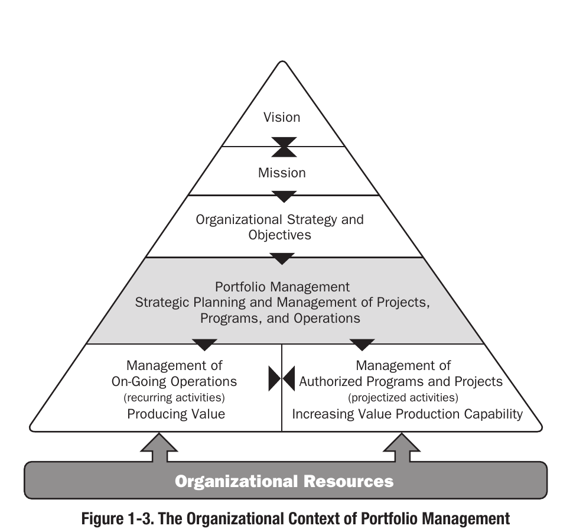

How do organisations manage portfolios of projects?
An organisation usually does not begin with a portfolio. It begins with things it wants or needs to do.
A business area identifies a problem, an executive proposes an initiative, a regulatory requirement creates new work, or the organisation decides that part of its strategy requires investment. Each request may make sense on its own. The difficulty begins when the organisation has many of them competing for the same money, people, technology and management attention.
Consider a business whose strategy includes reducing the time and cost required to deliver one of its major services. A business area proposes a new digital service and asks for the work to be approved.
Viewed on its own, the decision seems straightforward: define the expected benefit, estimate the cost, determine what needs to be delivered and decide whether the investment is worthwhile.
But the initiative does not exist on its own.
The platform it would rely on is already being upgraded elsewhere in the organisation. Some of the specialists needed for the work have already been committed to other projects. Finance has only part of the required funding available in the current period. Another programme may already be delivering something that overlaps with the proposed solution.
The management question therefore changes from should we approve this project? to should this work be done at all, should it be done now, where does it belong, what existing work does it affect, and what would the organisation have to delay or change in order to deliver it?
Once the organisation has dozens or hundreds of initiatives, the same problem exists across the enterprise. Projects and programmes compete for constrained resources. Dependencies cross organisational boundaries. Some investments support several strategic objectives while others become less important as priorities change. Decisions made at one level affect plans and commitments elsewhere.
This creates another problem: the information behind those decisions has to travel with the work.
Why was an initiative approved? What benefit was it expected to produce? Who owns that benefit? What budget and resources were authorised? What other work does it depend on? If circumstances change six months later, can management still see the reasoning behind the original investment and decide whether it should continue?
Managing a portfolio therefore involves more than monitoring whether individual projects are on schedule. At enterprise level, it means turning strategy into a coordinated set of investments, deciding which work should proceed, balancing that work against available capacity and funding, managing relationships between initiatives, and continually reassessing those decisions as conditions change.
A Project and Portfolio Management Information System (PPMIS) provides the management and information thread through which those decisions, plans and results can remain connected.
To understand what such a system needs to support, it helps to follow the work through the Enterprise Management Framework, beginning with enterprise planning and moving through portfolio planning, portfolio management, work management and ultimately operations.
The Enterprise Management Framework
The Enterprise Management Framework explains how an organisation moves from direction to delivery. It contains five connected components: enterprise planning, portfolio planning, portfolio management, work management and operations management. The framework is useful because it shows what must happen before work becomes a project or programme, how that work is selected and delivered, and the supporting management functions needed across the process.

Read from the top, enterprise planning defines the direction; portfolio planning organises that direction into manageable areas of investment; portfolio management evaluates and prioritises the work that should proceed; work management provides the channels through which that work is delivered; and operations management provides the supporting functions that connect governance, financial management, project and programme management, capacity management, resource management, maintenance and support.
The service problem described above moves through these components, becoming more specific as it moves from an intended outcome to a potential investment, then to prioritised and authorised work, and finally into delivery.
Enterprise planning
Enterprise planning establishes the direction against which later investment decisions will be made. Boles describes it as the process through which leadership determines the overall course of the organisation by considering market conditions, financial expectations, regulatory obligations and other enterprise requirements, and bringing them together into a coherent strategy.[1] In practice, organisations normally reach that direction through a combination of environmental analysis, performance analysis, strategic choice, objective setting and resource planning rather than beginning with a list of proposed projects.
The first task is to understand the organisation’s current position and the conditions around it. External scanning tools such as PESTLE can be used to structure political, economic, social, technological, legal and environmental factors, while SWOT can combine those external opportunities and threats with internal strengths and weaknesses. SWOT is specifically intended to help match organisational goals and capabilities to the environment in which the organisation operates.[2] Organisations also examine internal performance data, financial forecasts, customer or citizen demand, regulatory obligations, existing capabilities and known performance gaps. The purpose of this analysis is not simply to describe the organisation; it is to identify where the current state is inconsistent with the future state leadership wants.
Strategic planning then turns that evidence into choices. One useful way of understanding this process is diagnose → forecast → search → choose → commit → evolve: establish the starting position, consider how conditions may change, evaluate possible responses, choose a direction, commit resources and continually revisit the strategy as new information appears.[3] This matters because a strategy such as “improve digital services” has little operational value until management makes choices about which outcomes matter, what level of improvement is expected, which business areas are accountable and what financial or risk boundaries apply. Strategic planning also has to connect to financial planning; effective planning produces not just aspirations but targets, resource allocations and budgets that reflect those priorities.[4]

For the service problem, leadership might begin with evidence showing that average turnaround time is 12 days, processing cost has risen, users increasingly expect digital access and the current platform is approaching a technology constraint. Several responses may be possible: redesign the existing process, automate selected activities, build a new digital service, replace the underlying platform, or combine these changes. Enterprise planning does not choose a “Digital Service Project” yet. It establishes the outcome the organisation is pursuing—for example, reduce average turnaround time from 12 to 6 days while lowering processing cost and maintaining required control standards within three years. An executive or business owner is accountable for that outcome, measures and baselines are established, and broad funding, risk and policy constraints are defined.
The result of enterprise planning is therefore a set of strategic outcomes and operating boundaries: what must change, how success will be measured, who owns the outcome, the time horizon, and the constraints within which the organisation is willing to invest. A PPMIS needs to preserve these because every later portfolio, programme and project should be able to trace its existence back to the enterprise outcome it is intended to advance.
Portfolio planning
Once enterprise objectives have been defined, the organisation still cannot manage all possible investment as one enormous pool of work. Portfolio planning creates a structure between enterprise strategy and individual investment decisions. In Boles’ framework, leadership divides management among logical business areas or portfolios, determines the operating parameters for each, develops a roadmap of the changes that need to occur and asks what capacity is available to deliver them.[1] A portfolio can be organised around a business area, capability, customer group, geography, service or strategic outcome; the grouping depends on how the organisation needs to structure and control its investments. APM similarly describes portfolios as collections of projects and programmes used to structure and manage investments at organisational or functional level.[5]
The first practical step is therefore to define the portfolio boundary and mandate. Management decides what the portfolio is responsible for, which enterprise objectives it supports, who owns it, what decisions can be made within it and what existing programmes, projects and operational commitments already fall inside that boundary. Different organisations structure this differently: a bank might have Digital Channels, Risk and Regulatory Change portfolios; a public body might organise portfolios around services, policy outcomes or organisational capabilities. The important point is that a portfolio is a management boundary, not merely a folder containing projects.
The portfolio then needs a view of the change required to achieve its objectives. Organisations commonly use strategic roadmaps to represent this. A roadmap is deliberately higher-level than a project schedule: it shows outcomes, capabilities, major changes, dependencies and approximate sequencing before every project has necessarily been defined. Portfolio planning can also use benefits maps or dependency networks to connect desired strategic outcomes to the intermediate changes and capabilities needed to produce them. Benefits mapping is useful because it exposes relationships between investments rather than allowing candidate projects to appear as isolated proposals. APM identifies benefits mapping, dependency analysis, roadmapping and what-if scenario modelling as useful portfolio-level practices.[6]
The roadmap must then be tested against the organisation’s investment envelope and capacity. Planning does not mean assuming that every desired change can occur simultaneously. Leadership can establish funding limits, target investment categories, risk exposure, resource assumptions and planning horizons for each portfolio. Resource allocation research also shows why this matters: strategy only becomes executable when capital, talent and other scarce resources are actually shifted toward the areas the organisation has said are important.[7]

In the service example, the enterprise objective is assigned to a Service Modernisation Portfolio. Portfolio planning reveals that reducing turnaround time is not a single change. The portfolio roadmap contains a platform upgrade already under way, service-process redesign, data integration, control changes and improvements to digital access. The proposed digital service therefore enters an existing landscape of change rather than an empty space. The roadmap might reveal that the digital service depends on the platform upgrade, both require the same architects, and operations can absorb only one major service transition in a particular quarter. Those relationships now become part of the context against which later investment requests will be judged.
The output of portfolio planning is a portfolio strategy and roadmap: its purpose, owner, objectives, target outcomes, existing commitments, dependencies, investment themes, funding envelope, capacity assumptions and decision boundaries. The PPMIS must hold those relationships so that a request arriving later can immediately be assessed within the portfolio it affects rather than being evaluated in isolation.
Portfolio management
Portfolio planning establishes the objectives, roadmap and limits; portfolio management applies them to actual investment choices. Boles describes this as the point where planning meets practice, centred on a common intake of work, qualification of requests, prioritisation and creation of a portfolio realisation plan.[1] APM similarly defines portfolio management as the selection, prioritisation and control of projects and programmes in line with strategic objectives and the organisation’s capacity to deliver them.[5]

The process usually begins with demand or idea intake. Business areas submit proposed work through a common route rather than immediately creating projects. The initial record normally captures the problem or opportunity, sponsor, expected outcome, strategic alignment, indicative cost, timing, dependencies and initial resource demand. Standardised intake matters because it creates comparable information and makes it harder for projects to enter the portfolio simply because an influential person has already mobilised a team.
Requests that pass initial screening are then qualified. Organisations may develop a business case, options analysis, cost-benefit assessment, benefits profile, risk assessment and preliminary resource estimate. Benefits are especially important here because they provide a link back to strategy: expected benefits can be mapped to organisational objectives and assigned measures and owners before the work is approved. PMI describes benefits realisation as beginning with identifying expected benefits and aligning them with formal strategy.[8]
Qualified demands can then be compared and prioritised. Organisations use combinations of weighted scoring models, mandatory criteria, strategic alignment, financial return, risk, urgency, benefits, dependencies and regulatory necessity. But scoring alone is insufficient. Portfolio management also tests the proposed set of work against available money and delivery capacity. The highest-scoring five projects may still be impossible to run together if all five depend on the same scarce specialists. Leading organisations therefore map resource demand against prioritised work, identify capacity or capability gaps and adjust the mix accordingly.[9] Portfolio management is ultimately an optimisation problem: which feasible combination of work delivers the most value within the organisation’s actual constraints?
This often requires scenario analysis rather than one final ranking. Management might compare what happens if funding is reduced, a mandatory initiative is introduced, a major programme slips or a scarce resource becomes unavailable. The result may be to approve one initiative, defer another, combine related requests, accelerate an enabling project or stop existing work whose expected value has fallen. Portfolio management is continuous rather than annual because priorities, performance and capacity change during the year; effective resource allocation therefore includes mechanisms to revisit commitments and shift resources when circumstances change.[10]
In the service example, the digital-service request is formally captured and its benefits, costs, dependencies and specialist requirements are assessed. It scores highly against the service-modernisation objective, but analysis shows that it depends on the platform upgrade and both initiatives require the same architecture team. Management therefore does not simply approve the higher-scoring request. It brings the platform work forward, sequences the digital service behind it and reserves the relevant resources across both. If the budget later falls or the platform programme slips, the roadmap can be reconsidered rather than allowing the downstream project to continue against an invalid assumption.
The PPMIS therefore needs to maintain the entire decision history: request, sponsor, business case, expected benefits, costs, resource demand, dependencies, assessment scores, scenarios, priority, decision, rationale, funding, conditions and position on the current roadmap. This is what turns portfolio management from a periodic spreadsheet exercise into an auditable management process.
Work management
Once work is authorised, the organisation must decide how it should be delivered. Boles describes work management as the collection of delivery channels through which different types of work proceed concurrently.[1] This is important because an approved investment does not automatically become one standalone project. The delivery structure depends on the nature of the change, its complexity, the outcomes required and its relationships with other work.
A bounded piece of temporary work with a defined output can be established as a project. Where several projects and change activities must be coordinated to achieve a common outcome or set of benefits, organisations may establish a programme instead. Programme management exists precisely because individually successful projects can still fail to produce the intended organisational outcome if their dependencies, sequencing, shared resources and benefits are not coordinated. PMI describes programmes as a way to optimise schedules, staffing and interdependent projects around common benefits; programme managers coordinate those relationships and determine the appropriate pacing of the component projects.[11] Some authorised work may also be delivered through product/release structures or through existing operational processes rather than through a formal project at all.
Once the delivery structure is chosen, the mandate established during portfolio management is decomposed into a more detailed delivery baseline. Project and programme teams define scope, outputs, milestones, schedules, resources, budgets, risks, assumptions and dependencies. Programmes additionally manage cross-project dependencies, programme-level benefits, transition activities and shared milestones. A programme roadmap can sequence component projects according to the capabilities and benefits they enable rather than simply arranging them by start date. PMI’s programme guidance explicitly connects component sequencing, benefit milestones, resource constraints and programme roadmaps.[12]
Governance continues after authorisation. Many organisations use stage or gateway reviews at significant decision points. The delivery team provides evidence on progress, forecast cost, risks, readiness and continued viability, while the sponsor or governance body decides whether investment should continue, whether scope or timing should change, or whether the work should stop. This distinction matters in a PPMIS: the project manager controls delivery within the approved mandate, while governance retains the authority to change the investment decision.
Delivery information also has to move back upward. A project delay can affect a programme milestone; a programme delay can change benefits forecasts; and those changes may make a different portfolio investment more attractive. Work management therefore cannot be an isolated scheduling module. Actual cost, forecasts, milestone status, resource use, dependencies, changes, risks and expected benefits must continuously update the portfolio view.

For the service example, analysis shows that the intended outcome requires more than a digital front end. The organisation establishes a Service Modernisation Programme containing a platform-upgrade project, service-process redesign, data integration, control implementation and adoption/change work. Each project has its own outputs, budget and schedule, but the programme manages the dependencies between them and retains responsibility for the combined outcome. The digital-service component cannot go live until platform capability and controls are ready, while adoption work must continue beyond technical deployment.
The PPMIS must therefore represent the relationships between portfolio, programme and project, not simply provide separate project records. It needs to preserve mandates, component structures, milestones, dependencies, resources, costs, risks, decisions, changes, benefits and status information while retaining the link to the portfolio decision that authorised the investment.
Operations management
Operations management is different from the other four components because it is not simply the final stage after project delivery. In Boles’ Enterprise Management Framework it provides the facilitating functions that support the other components, linking governance, financial management, project and programme management, capacity and resource management, maintenance and ongoing support.[1] It also becomes important at the other end of delivery because programmes and projects eventually hand new capabilities into the operational organisation that must use, support and sustain them.
One major operational function is capacity management. Boles separates this into resource planning and resource management. Resource planning forecasts future demand for skills, people, funding and other capacity; resource management turns those forecasts into actual allocations and commitments as delivery approaches. Crucially, the organisation first has to provide enough capacity for ongoing operational obligations—the work required to keep existing services running. Only the remaining capacity is genuinely available for discretionary project and programme work.[1] This is why portfolio approval cannot be separated from BAU demand: allocating a specialist to a transformation programme may mean removing that specialist from an operational responsibility somewhere else.

Finance and governance operate in a similar cross-cutting way. Finance provides budgets, forecasts, actual expenditure and investment controls across planning and delivery. Governance establishes decision rights, policies, assurance requirements and escalation routes. Operational managers provide information about service constraints, maintenance windows and readiness for change. Together, these functions prevent the project portfolio from being planned as if the rest of the organisation does not exist.
Operations also becomes responsible for transition and benefits sustainment. A project can successfully deliver a system or process without the organisation ever realising the benefit used to justify it. Benefits-management practice therefore distinguishes between delivering a capability and sustaining its value after it has transitioned into the business. PMI’s Benefits Realization Management framework explicitly covers identifying benefits, delivering them during execution and sustaining them after the project has ended and the result has transitioned to the business unit.[8] Operational owners need to accept the new capability, have support and maintenance arrangements in place, monitor adoption and performance, and continue measuring the business outcome.
For the service-modernisation programme, going live with the digital service is therefore not the final measure of success. Operations accepts the new service, provides support, monitors transaction volumes, processing time, control failures and user adoption, and compares actual performance with the original objective. If average turnaround time falls only from 12 days to 9 rather than the targeted 6, the information becomes new evidence. Management might change the operating process, initiate further improvement work or reconsider the portfolio roadmap. Benefits and operational performance therefore close the loop back into the next planning cycle rather than disappearing when the project record is closed.
The PPMIS needs to connect this operational information back to the investment that created it: resource capacity and commitments, operational readiness, handover and acceptance, support ownership, benefit owners, baselines, targets, actual performance and lessons learned. That allows leadership to answer not only did we deliver the project? but did the organisation actually improve in the way that justified the investment?